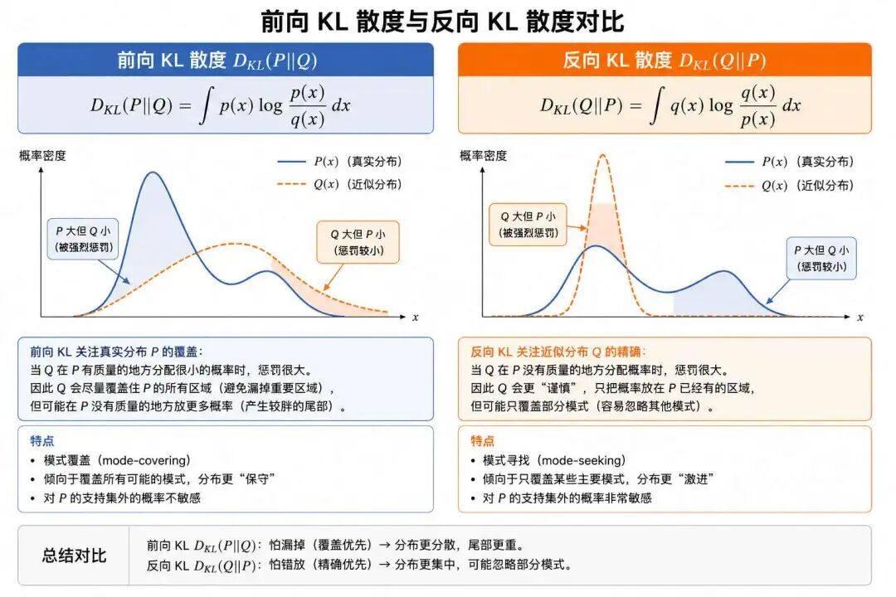

"优化的艺术不在于走得多快，而在于每一步都走对方向"--约翰·舒尔曼（John Schulman），TRPO/PPO作者
REINFORCE和Actor-Critic算法虽然提出了并实践了直接优化策略的强化学习方法，但是这两大算法本身的设计就存在着天然的缺陷：
1）Actor和Critic的循环依赖 Actor-Critic产生缺陷的根本原因在于策略网络Actor与价值网络Critic存在着相互依赖： 首先Actor的梯度更新方向是由Critic提供的A2C优势函数，如TD误差所决定，若Critic的价值估计存在偏差，如训练初期或环境随机性高，Actor就会接收到错误信号，导致策略更新偏离最优方向。
相反Critic依赖于Actor的样本质量，因为Critic的训练数据来自Actor与环境交互的样本。若Actor使用的策略不稳定，样本分布持续变化，则Critic难以收敛到准确的价值函数，最终形成“追逐移动目标”的恶性循环。
2）价值估计的偏差与方差 由于Actor-Critic中引入了TD误差，单步TD因为仅依赖下一步奖励，所以方差低。但是仅仅单步，与真实结果的偏差必然大。
而多步TD中因为能够考虑多步回报，则偏差相对会更小，但是随着“步数”的变多，智能体在探索时，轨迹的随机性肯定也变大，方差也更高了。
由于Critic采用了神经网络结构，这种误差，不论是偏差还是方差，随着训练时间的推移，近似误差会逐渐累积，最终导致训练崩溃或者中断。
3）策略梯度对步长的敏感性 根据策略梯度公式，A(s,a)的幅度决定了梯度的变化幅度，而A(s,a)则受奖励范围的影响。若环境奖励稀疏(最后才反馈奖励的情况)，或奖励范围过大，如 [-1000, 1000]，梯度可能会剧烈波动，需极精细的学习率控制。
其次策略网络的微小参数变化，也可能导致动作概率分布显著改变，如从 $π(a|s)=0.9$ 突变为0.1，使策略性能崩溃。
为了解决上述问题，诞生了Trust Region Policy Optimization算法，简称TRPO，中文又称信赖域策略优化。
它于2015年由John Schulman等人提出，它通过引入信赖域约束，解决了传统策略梯度算法，如REINFORCE、Actor-Critic的策略更新不稳定和训练崩溃问题，成为后续算法（如PPO，后面将会重点介绍）的重要基础。
首先我们可以尝试来理解“信赖域”是什么意思？既然是“域”，则就会存在着一个边界，在边界范围内就是可以“信赖”的，这就是信赖域的字面含义。
TRPO的核心思想就是在“信任域”内大胆探索，域外严格禁止。 我们首先来看看信任域定义：以旧策略为圆心，$KL$ 散度，$δ$ 为半径的“安全区”。 信任域的优化目标是在域内找一个新策略，使回报提升最大。
而要实现"信赖域"，核心就在于TRPO的创新机制：提出用"KL散度"来约束新旧策略的差异，将更新限制在信赖域以内。
那什么是KL散度呢？我们可以先从一个生活场景来理解。
假设你有一个朋友，他每天穿衣服的风格可以用一个"概率分布"来描述：60%穿T恤，30%穿衬衫，10%穿卫衣。后来他换了一份新工作，穿衣风格变了：40%穿T恤，50%穿衬衫，10%穿卫衣。那么他的穿衣风格"变了多少"？KL散度就是用来量化这种"变化程度"的数学工具。
KL散度又称之为"相对熵"，它的作用跟我们前面学习的误差函数很像，但不是同一个概念，它主要用于衡量两个概率分布之间的相对偏离程度。KL散度值越大，说明两个分布差异越大；值为0则说明两个分布完全相同。
用更专业的话来说，KL散度是"用不准确描述（Q）代替真实情况（P）时，产生的信息误差量"，以下是KL散度的两种形式：
描述Q在P概率高的事件上预测不准的程度（如低估下雨的真实概率）；
描述Q在自身概率高的事件上偏离P的程度（如高估晴天发生的真实概率）；

学习完KL散度之后，我们来看看在TRPO中是如何利用KL散度来构建信赖域约束的。
为了方便理解，我们可以把TRPO要做的事情，想象成一个"戴着安全带走钢丝"的过程：
TRPO把这个问题转化为一个带约束的优化问题，包含两个部分——一个是要最大化的"目标"，另一个是不能违反的"约束"：
（1）优化目标：最大化替代优势函数
$$ L(\theta) = \max_\theta \mathbb{E}_{s,a \sim \pi_{\text{old}}} \left[ \frac{\pi_\theta(a|s)}{\pi_{\text{old}}(a|s)} A^{\pi_{\text{old}}}(s,a) \right] $$注释版：
$$ L(\theta) = \underbrace{\max_{\theta}}_{\text{对策略参数}\theta\text{取最大化}} \underbrace{\mathbb{E}_{s,a \sim \pi_{\text{old}}}}_{\substack{\text{对旧策略}\pi_{\text{old}} \\ \text{采样的}(s,a)\text{取期望}}} \left[ \underbrace{\frac{\pi_\theta(a|s)}{\pi_{\text{old}}(a|s)}}_{\text{策略概率比值}} \cdot \underbrace{A^{\pi_{\text{old}}}(s,a)}_{\text{旧策略下的优势函数}} \right] $$（2）约束条件：
$$ \mathbb{E}[D_{\text{KL}}] = \mathbb{E}_s \left[ \text{KL}\left( \pi_{\text{old}}(\cdot|s) \parallel \pi_\theta(\cdot|s) \right) \right] \leq \delta $$注释版：
$$ \mathbb{E}[D_{\text{KL}}] = \underbrace{\mathbb{E}_{s}}_{\text{对状态}s\text{取期望}} \left[ \underbrace{\text{KL}\left( \pi_{\text{old}}(\cdot|s) \parallel \pi_\theta(\cdot|s) \right)}_{\text{新旧策略的KL散度}} \right] \leq \underbrace{\delta}_{\text{KL散度阈值}} $$其中 $\delta$ 是预设的阈值，控制策略变化幅度。
在约束条件中，KL的值越大，则说明新旧策略之间偏离程度越大，如果将这个偏离程度控制在某个常量 δ值之内，则可以最大化避免策略更新的波动性过大而导致的训练崩溃问题。
论文原文中是这样概述的：确保每次策略更新后回报函数是单调递增的 $η(π_{new}) ≥ η(π_{old})$，从根本上避免策略崩溃。
KL散度理论上很完美，通过信赖域给策略更新系上了安全带，但是实际上实现却存在着最优化难题。
首先KL散度约束是非凸且非线性的，你可以简单理解为，不是标准的抛物线，不存在极值点，所以无法直接求解全局最优解。
KL散度约束的复杂计算源于高维积分、分布复杂性、梯度优化与估计器选择的耦合挑战。
1）数学优化难题：约束问题的非凸性
由于KL散度约束是非凸且非线性的，无法直接求解全局最优解。需要依赖局部近似（如泰勒展开），但近似误差易导致约束失效或更新保守。
2）计算复杂度：Hessian矩阵的高成本
KL散度的二阶Hessian矩阵（即Fisher信息矩阵 F）维度为 $n \times n$（n 为策略参数数量），显式计算 F 或 $F^{-1}$ 的复杂度为 $O(n^3)$。若策略网络有 $10^4$ 个参数，F 矩阵需存储 $10^8$ 个元素，远超GPU显存容量。
3）采样敏感性：分布差异的方差放大
重要性采样权重 $\frac{\pi_\theta(a|s)}{\pi_{\text{old}}(a|s)}$ 在策略差异大时方差急剧增加，导致优势函数估计偏差。若新旧策略KL散度超过阈值 $\delta$，替代目标函数的梯度可能指向错误方向，引发策略崩溃。
为解决上述难题，TRPO采用三大核心技术，分别对应破解：
| 难题 | 对应技术 | 一句话解释 |
|---|---|---|
| 非凸约束无法直接求解 | 二阶近似（泰勒展开） | 把"复杂曲面"近似为"简单抛物线" |
| Hessian矩阵太大算不动 | 共轭梯度法 | 不算整张地图，只探路找方向 |
| 近似有误差可能不准 | 回溯线搜索 | 迈步前先试探，不行就缩小 |
接下来我们逐一详细讲解这三大技术。
TRPO的核心思路是：把"难算的非凸优化问题"，变成"好算的二次规划问题"。
什么是泰勒展开？你可以简单理解为用简单的形状去近似复杂的形状。一阶近似是用"直线"去近似，二阶近似是用"抛物线"去近似。一阶太粗糙（只看坡度，不知前方是否有悬崖），二阶更精准（增加曲率考量，能预判地形变化），又不会像更高阶那样难算。
想象你站在山坡A点（旧策略），想去更高处B点（新策略）。但山路崎岖，一步跨太大可能踩空。TRPO的做法是：
具体来说，TRPO对两个关键部分分别做泰勒展开：
目标函数的一阶展开：在旧参数 $\theta_{\text{old}}$ 附近，用直线近似目标函数，结果为 $g^T \Delta \theta$，其中 $g$ 是策略梯度（坡度方向），$\Delta \theta$ 是参数更新量（要迈的步子）。
KL散度的二阶展开：在 $\theta_{\text{old}}$ 处用抛物线近似KL散度，结果为 $\frac{1}{2} \Delta \theta^T H \Delta \theta$。这里 $H$ 是Fisher信息矩阵（FIM），反映了策略空间的局部曲率（地形弯曲程度）。
经过近似，原问题转化为一个经典的二次规划问题：
$$ \max_{\Delta \theta} g^T \Delta \theta \quad \text{s.t.} \quad \frac{1}{2} \Delta \theta^T H \Delta \theta \leq \delta $$注释版：
$$ \underbrace{\max_{\Delta \theta}}_{\text{对参数更新量取最大化}} \underbrace{g^T \Delta \theta}_{\text{梯度与更新量的内积}} \quad \underbrace{\text{s.t.}}_{\text{约束条件为}} \quad \underbrace{\frac{1}{2} \Delta \theta^T H \Delta \theta}_{\text{参数更新量的二阶约束项}} \leq \underbrace{\delta}_{\text{约束阈值}} $$该问题可通过拉格朗日乘子法求解。构造拉格朗日函数并求导，得到最优更新方向为：
$$ \Delta \theta^* \propto H^{-1} g $$这个方向 $H^{-1} g$ 被称为自然梯度（Natural Gradient）。普通梯度 $g$ 只告诉你"哪个方向是上坡"，而自然梯度 $H^{-1} g$ 还考虑了"地形的弯曲程度"，相当于"既知道方向，又知道该走多快才安全"。
为了严格控制步长以满足KL散度约束，最终参数更新公式为：
$$ \theta_{\text{new}} = \theta_{\text{old}} + \sqrt{\frac{2 \delta}{g^T H^{-1} g}} H^{-1} g $$注释版：
$$ \underbrace{\theta_{\text{new}}}_{\text{更新后策略参数}} = \underbrace{\theta_{\text{old}}}_{\text{更新前策略参数}} + \underbrace{\sqrt{\frac{2 \delta}{g^T H^{-1} g}}}_{\text{步长系数}} \underbrace{H^{-1} g}_{\text{自然梯度方向}} $$这里有一个非常美妙的数学事实：KL散度在旧策略参数 $\theta_{\text{old}}$ 处的Hessian矩阵，恰好等于Fisher信息矩阵（FIM）。FIM揭示了概率模型在参数 $\theta$ 附近的固有敏感度（即平均弯曲程度），天然保证半正定，数值上更稳定。简单来说，FIM就是"地形敏感度地图"--它告诉你参数每变化一点，策略行为会变化多少。
但是，FIM和Hessian矩阵的求逆过程 $H^{-1}g$ 十分"昂贵"。矩阵维度为 $d \times d$（d是策略网络参数数量），而现代深度神经网络的d通常高达 $10^6 \sim 10^7$，直接求逆的时间复杂度为 $O(N \cdot d^2)$，根本算不动。
$H^{-1}g$ 的计算量非常巨大，TRPO采用了一个巧妙的转换：不求逆矩阵，而是把问题转化为求解线性方程 $Hx = g$：
共轭梯度法像一位"聪明的探路者"，他不测绘整座山（不显式计算H），而是沿"共轭方向"踩点，每一个新方向都与之前所有方向保持"共轭"关系，保证了不重复探索，用最少步数找到安全路径。
怎么理解"共轭"这个概念呢？"共轭"的本意源自两头牛同步行走时共架的横轭，引申为"按特定规律配对、协同运作的一对事物"。
共轭梯度法与普通梯度法的核心区别在于探索方向不重复：
举个通俗例子：机器人调整腿部发力参数时，上一步调整了"膝盖弯曲度"发现膝盖很敏感，下一步就改为调整"脚掌角度"，避开膝盖敏感区，减少整体失衡风险。
共轭梯度法有一个非常厉害的性质--二次终止性：对于n维问题，理论上最多n步迭代即可得到精确解，因为n个共轭方向恰好张成了整个参数空间，且探索互不重叠，没有浪费任何一步。在TRPO实际应用中，虽然问题并非严格二次，但此性质保证了它能高效逼近 $Hx = g$ 的解。
通过以上步骤，共轭梯度法能够高效地给出梯度更新的方向。
共轭梯度法不是已经给出了梯度更新的方向吗？为什么还需要一个回溯线搜索？
因为二阶近似把悬崖压成"抛物线斜坡"时，用的是泰勒展开近似（像手绘地图），虽然大体靠谱，但局部地形可能有偏差。直接按理论步长迈步，可能导致实际KL散度超标（策略变化太大）或策略性能下降（回报不升反降）。
所以回溯线搜索的作用，像用登山杖试探水深，逐步缩小步长，直到踩到实地。
回溯线搜索的核心操作是：从最大理论步长开始，按比例β逐步缩减，每试探一次就检查一次安全条件，直到找到一个能“安全落脚”的步长。公式可简化为：
$$ θ_{new} = θ_{old} + \alpha_{max} \cdot \beta^j \cdot s $$注释版：
$$ \underbrace{\theta_{\text{new}}}_{\text{更新后策略参数}} = \underbrace{\theta_{\text{old}}}_{\text{更新前策略参数}} + \underbrace{\alpha_{\text{max}}}_{\text{理论最大步长}} \cdot \underbrace{\beta^j}_{\text{步长衰减因子（}j\text{为回溯步数）}} \cdot \underbrace{s}_{\text{共轭梯度计算方向}} $$| 符号 | 含义 | 类比解释 |
|---|---|---|
| $θ_{old}$ | 旧策略参数 | 你当前站立的河岸位置 |
| $s$ | 共轭梯度计算的方向 | 地图推荐的前进方向（指向对岸） |
| $β$ | 回溯系数（0.8） | “谨慎系数”，每次缩小20%步幅 |
| $j$ | 试探次数（0,1,2...） | 第几次伸脚试探 |
| $θ_{new}$ | 新策略参数 | 试探后实际落脚点 |
以下是回溯线搜索的完整运用步骤： (1) 起步试探：先按理论最大步长 $α_{max}$ 尝试（j=0）：
θ_try = θ_old + α_max * s // 相当于直接迈1米(2) 检查安全：计算实际KL散度和策略回报：
(3) 缩小步长：若失败，则令 $j=j+1$ ，步长缩为 $β^j * α_{max}$：
新步长 = 初始步长 × (0.8)^j // 第一次缩到0.8米，第二次0.64米...(4) 重复试探：循环直到成功或达最大试探次数（如10次）。 🌰 例子：机器人走路策略更新（参数θ控制抬腿高度）：
综合以上三大核心技术，我们回过头来可以看到他们是如何协同工作完成信赖域约束的：
（1）首先是二阶近似：把悬崖压成缓坡（用二次函数近似KL约束） → 生成“地形图” H。
（2）然后是共轭梯度：在“地形图”上智能探路 → 解 Hx = g 得更新方向 x。
（3）最后是回溯线搜索：伸脚试探步长 → 确保实际KL散度≤阈值δ。
不知道大家学完TRPO算法之后是什么感受，这个算法真的是太太麻烦了，所以后续PPO给出了更加高效的裁剪目标函数法，这也就是下一篇我们要介绍的算法。
信赖域（Trust Region） 以旧策略为中心、在一定"安全半径"内界定的参数区域。TRPO 的核心思想是只在这一可信赖的区域内更新策略——域内大胆探索，域外严格禁止。它将"步子该迈多大"这一隐患从凭经验调参，转化为一个可量化、可约束的优化问题，是 TRPO 区别于传统策略梯度算法的根本所在。
KL散度（KL Divergence / 相对熵） 衡量两个概率分布相对偏离程度的度量，可理解为"用不准确的分布 Q 代替真实分布 P 时所产生的信息误差量"。在 TRPO 中，它被用来量化新旧策略之间的差异，从而把"信赖域"这一直觉概念转化为可计算的数学约束。它并不对称：KL(P‖Q) 与 KL(Q‖P) 含义不同，分别称为前向 KL 与反向 KL。
替代优势函数（Surrogate Objective） TRPO 的优化目标。由于无法对尚未确定的新策略直接采样，它借助重要性采样，用旧策略采集的样本来估计新策略的性能提升，形式为"概率比值 × 旧策略优势函数"的期望。其意义在于让我们能"用旧数据评估新策略"，从而在一次采样后多次更新，大幅提升样本利用效率。
重要性采样（Importance Sampling） 通过概率比值 π_θ(a|s)/π_old(a|s) 对样本重新加权，用一个分布采集的数据去估计另一个分布下的期望。它是替代目标函数成立的数学基础，但代价是：当新旧策略差异过大时，该比值方差会急剧放大、导致估计失真——这正是必须用 KL 约束限制策略变化幅度的根本原因之一。
单调改进保证（Monotonic Improvement） TRPO 的理论基石：将策略更新限制在信赖域内，可保证每次更新后回报函数单调不减，即 $η(π_{new}) ≥ η(π_{old})$。这一性质从根本上避免了传统策略梯度因步长不当而导致的性能崩溃，使训练过程获得了理论上的稳定性保障。
二阶近似与二次规划（Quadratic Programming） TRPO 求解策略的关键转化手段。通过对目标函数做一阶泰勒展开、对 KL 约束做二阶泰勒展开，原本"非凸目标 + 复杂约束"的难解问题，被近似为"线性目标 + 二次约束"的二次规划，从而可用拉格朗日乘子法求得解析形式的更新方向。一阶看坡度、二阶看曲率，二者结合既能判断方向，又能预判前方地形风险。
自然梯度（Natural Gradient, H⁻¹g） 用 Fisher 信息矩阵的逆校正后的梯度方向。与只考虑参数欧氏空间的普通梯度不同，它衡量的是策略所代表的概率分布空间（黎曼流形）上的最速上升方向，使得"等量的参数变化"对应"等量的策略行为变化"，从而让更新方向更贴合策略优化的真实几何结构。
Fisher信息矩阵（Fisher Information Matrix, FIM） 刻画概率模型在参数 θ 附近固有敏感度（局部曲率）的矩阵。一个关键事实是：KL 散度在旧策略参数处的 Hessian 恰好等于 FIM。这使它成为 TRPO 中度量策略空间曲率、构建二阶约束的核心工具。它天然半正定、数值稳定，但维度高达 d×d，直接求逆代价极其昂贵。
共轭梯度法（Conjugate Gradient Method） 一种在不显式计算与存储矩阵 H 的前提下，求解线性方程组 Hx = g 的迭代方法。它构造一组关于 H 相互共轭（即 dᵢᵀHdⱼ = 0）的搜索方向，保证每一步都探索之前未覆盖的方向、互不重叠。其二次终止性意味着理论上最多 n 步即可解出 n 维问题的精确解，从而以极低开销绕开了高维矩阵求逆这一瓶颈。
回溯线搜索（Backtracking Line Search） 在确定更新方向后对步长所做的安全校验。由于二阶近似存在误差，理论步长未必满足真实约束，回溯线搜索从最大理论步长出发、按固定比例 β 逐步缩减，每缩一次便检验"实际 KL 是否超限、回报是否真正提升"，直到找到安全步长。它是弥合"近似数学"与"真实策略"之间偏差的最后一道保险。